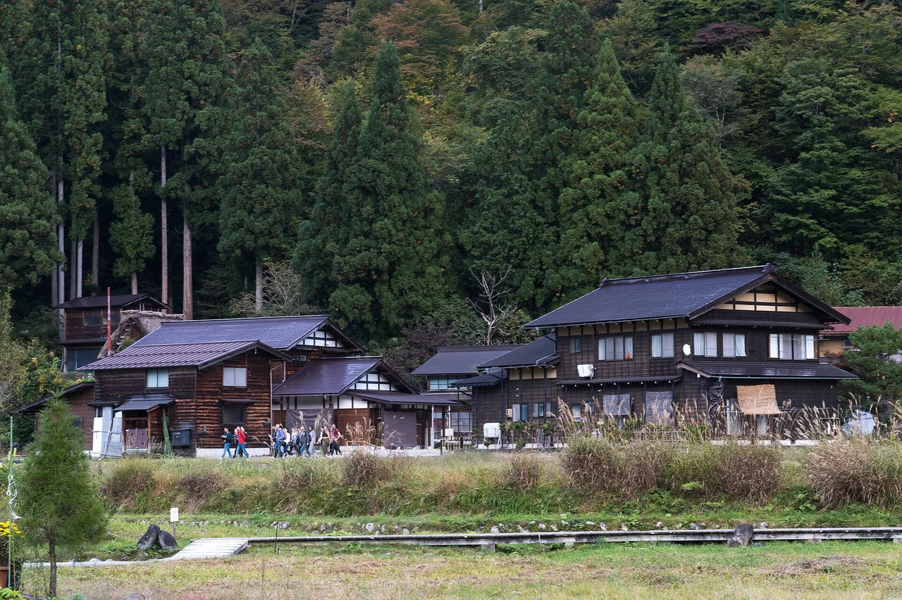

Gifu 旅遊指南（為日語學習者撰寫）
重點
一個位於日本中部的內陸山區都道府縣，以UNESCO世界遺產Shirakawa-go的茅茨farmhouse和日本阿爾卑斯Takayama保存完好的江戶時期街道而聞名。該地還擁有Gero，被列為日本三大溫泉之一。
📍 必看: Shirakawa-go · 🥢 必嚐: Hida beef (Hida-gyu) · 來源
茅草山村與河畔古鎮高山。

🍜 美食 ▰▰▰▰▱ 🏯 文化 ▰▰▰▰▱ 🏙 城市 ▰▰▱▱▱ 🚄 交通 ▰▰▱▱▱ 🌿 自然 ▰▰▰▰▱
🥢 必嚐: Hida beef (Hida-gyu) · 📍 必看: Shirakawa-go
🗣 山の天気は変わりやすいです。 Yama no tenki wa kawari yasui desu.
岐阜深入阿爾卑斯山脈。白川鄉的陡峭茅草農舍是聯合國教科文組織的標誌，高山則保留著保存完好的商人街區。
必看景點
★ Shirakawa-go★ Hida Takayama Old Town (Sanmachi)★ Gujo Hachiman castle town💎 Gujo Odori dance💎 Mino washi papermaking
- Shirakawa-gō gasshō-zukuri 村莊（聯合國教科文組織）
- 高山古城區
- 郡上八幡及其夏季舞蹈
- 岐阜城與鸕鶿捕魚
必吃美食
★ Hida beef (Hida-gyu)★ Hoba miso★ Takayama ramen💎 Keichan (kei-chan)💎 Gohei mochi
飛騨牛是備受推崇的當地特產。
如何前往與最佳季節
如何前往: 高山距名古屋約2小時20分鐘的特快列車車程；白川鄉可乘坐巴士前往。
最佳季節: 冬季欣賞被雪覆蓋的茅草屋頂（以及夜間點燈）；春季/秋季參加高山祭。
學個日語
おいしいです！
Oishii desu! — "白川鄉陡峭的茅草農舍風格"
在地詞彙
合掌造り
gasshō-zukuri — 白川鄉陡峭的茅草農舍風格
💡 小提醒
白川鄉冬季夜間點燈活動名額有限，需提前預訂。
資料來源: Japan National Tourism Organization (JNTO).
事實依官方旅遊資訊查核，觀點為我們所有。